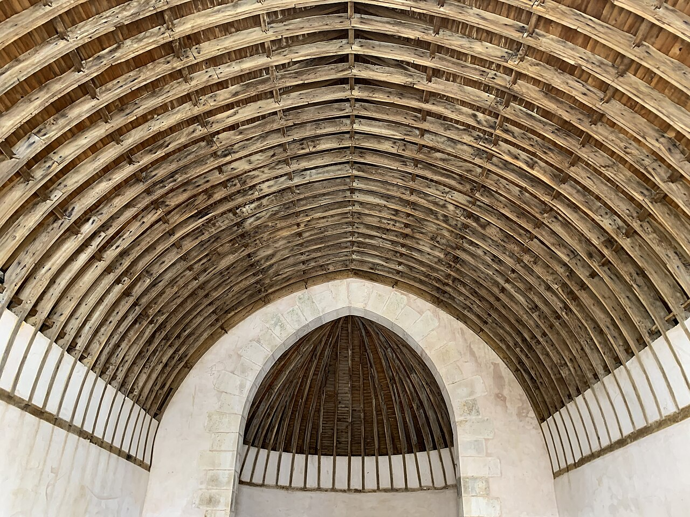

Charpentier couvreur au Creusot
Charpente, couverture et zinguerie pour les maisons et bâtiments de Saône-et-Loire. Une entreprise locale, installée au Creusot depuis 2005.

- 21 ans d'expérienceEntreprise créée en 2005
- Basés au Creusot18 rue de Decize
- Tous types de toituresTuile, ardoise, zinc, bac acier
- Devis gratuitDéplacement pour voir votre toit
Nos métiers
De la charpente jusqu'à la dernière gouttière, nous prenons en charge toute la toiture.
-
 Voir les prestations
Voir les prestationsCharpente
Fabrication et pose de charpentes bois, traditionnelles ou industrielles, modification et surélévation.
-
 Voir les prestations
Voir les prestationsCouverture
Toitures en tuile, ardoise, zinc ou bac acier : réfection complète, réparation de fuites, démoussage.
-
 Voir les prestations
Voir les prestationsZinguerie
Gouttières, chéneaux, descentes d'eau pluviale, noues et habillages en zinc.
-
 Voir les prestations
Voir les prestationsIsolation
Isolation de toiture, aménagement de combles, bardage extérieur pour réduire les pertes de chaleur.
Comment se passe un chantier
Vous nous appelez
Par téléphone ou via le formulaire, vous nous décrivez votre besoin.
Nous venons voir
Visite sur place pour examiner la charpente et la couverture.
Vous recevez le devis
Un devis détaillé et gratuit, poste par poste.
Nous réalisons les travaux
Chantier mené par notre équipe, nettoyé à la fin.
Une entreprise du Creusot
PROXITOIT est une entreprise de charpente, couverture et zinguerie dirigée par Christophe Roulot. Depuis 2005, notre petite équipe intervient chez les particuliers, les collectivités et les professionnels du bassin creusotin.
Être proches, c'est pouvoir passer voir un toit rapidement, revenir si besoin, et connaître les maisons du secteur : pavillons, maisons ouvrières, corps de ferme et bâtiments d'activité.
Zone d'intervention
Nous intervenons au Le Creusot et dans les communes alentour, en Saône-et-Loire :
- Le Creusot
- Montceau-les-Mines
- Montchanin
- Torcy
- Le Breuil
- Saint-Sernin-du-Bois
- Écuisses
- Blanzy
- Saint-Vallier
- Couches
- Autun
- Chalon-sur-Saône
Un projet de toiture ?
Nous nous déplaçons pour voir votre toit et vous remettons un devis gratuit.